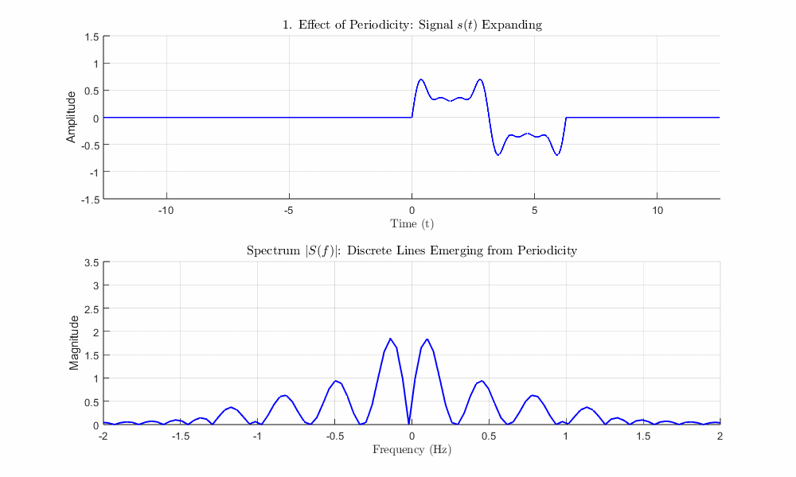
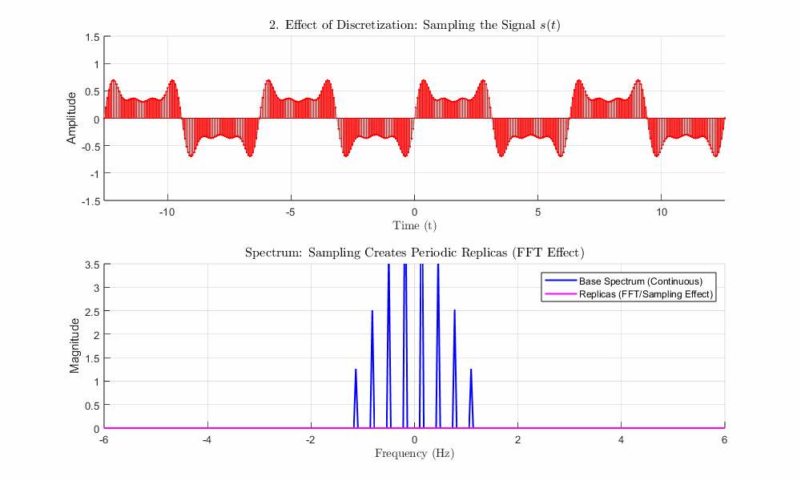
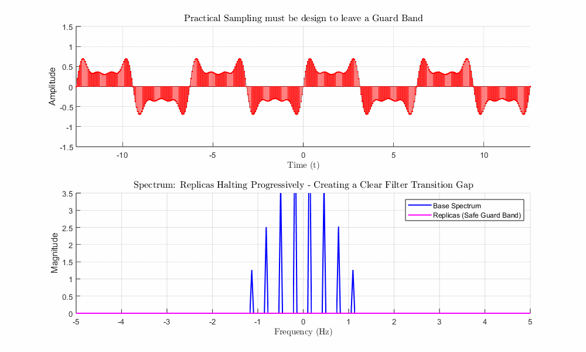
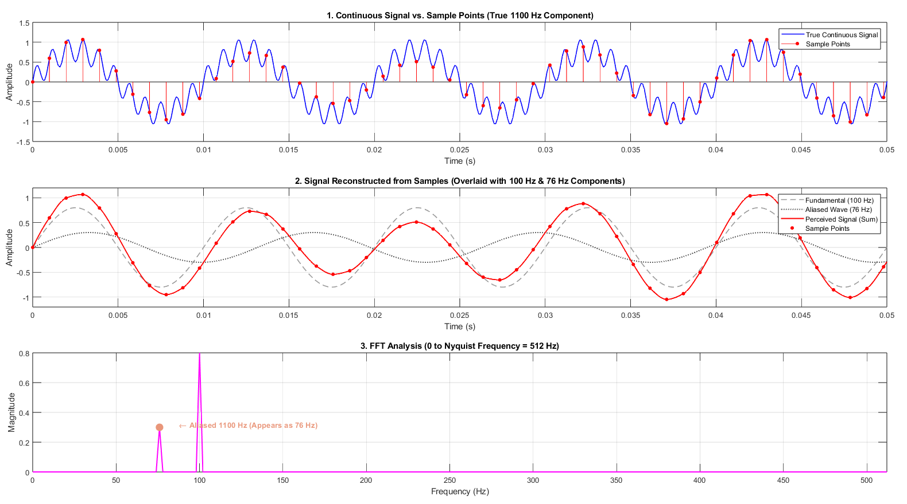
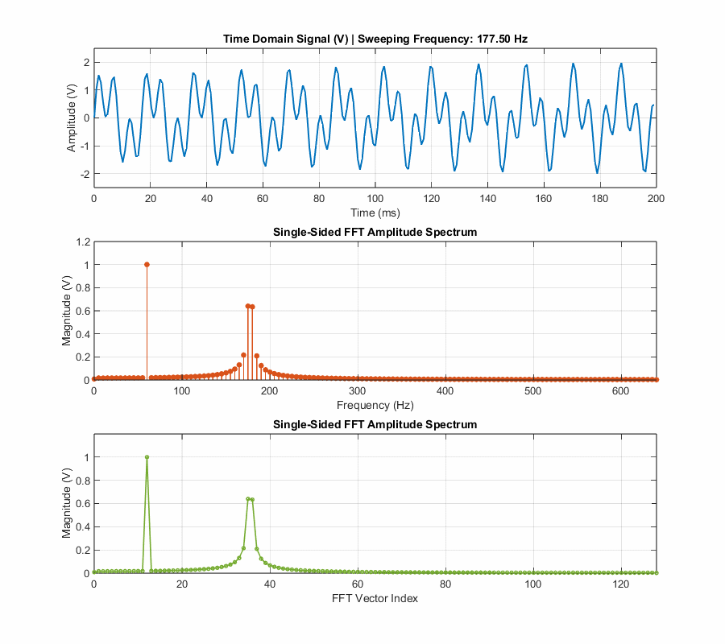
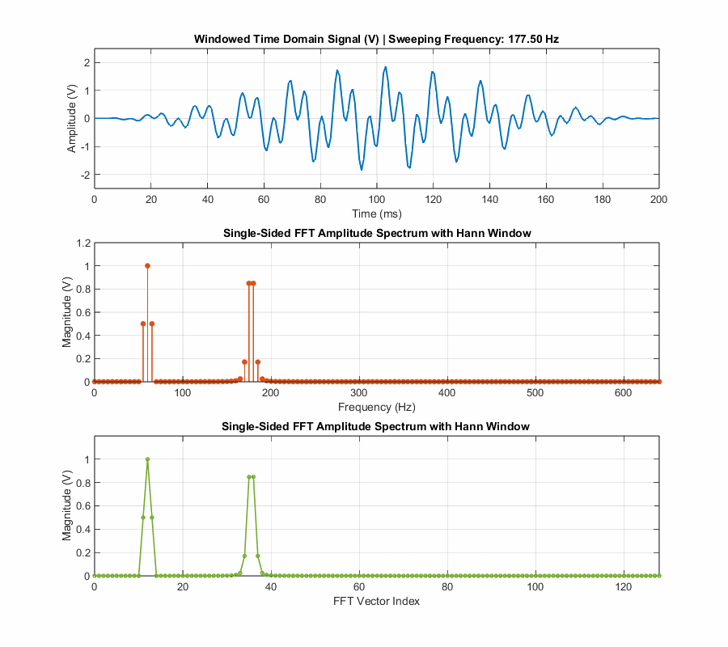
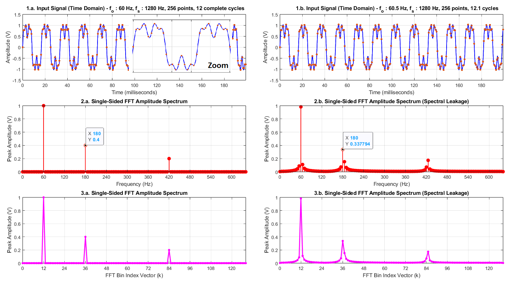
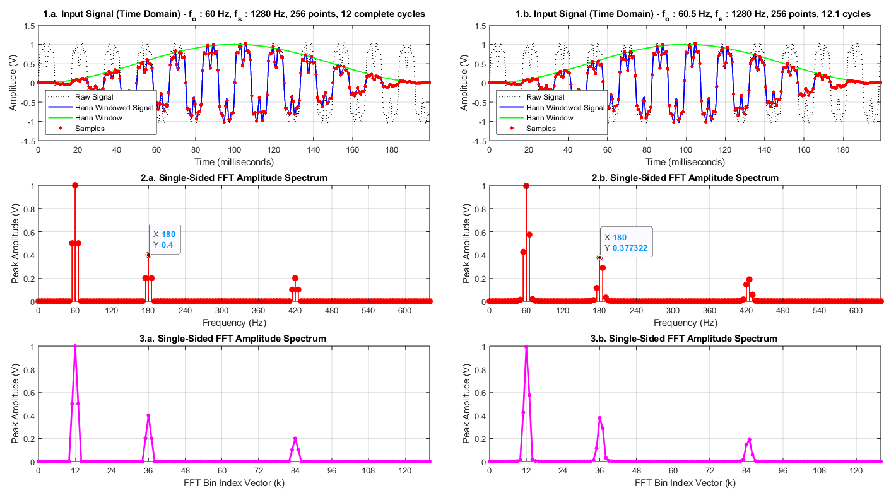

How to perform spectral analysis of a signal using Teensy 4.1.
Motivation and Goal
Spectral analysis of signals is a crucial tool in engineering, as it allows for the clear visualization of signal aspects that go unnoticed in the time domain. This, among other things, enables the detection of problems, system optimization, and failure prevention.
Spectral analysis involves decomposing a signal to separate it into parts that allow for a better understanding of the signal, such as breaking down a complex problem into smaller, more easily solvable problems [1].
There are several types of signal decomposition to provide spectral analysis, with Fourier Analysis being the most popular.
To perform Fourier analysis on computers, the Fast Fourier Transform (FFT) is used. Implementing the code to calculate the FFT is not a trivial task, but fortunately there are several libraries available on the internet for this purpose for different platforms.
To obtain good results in terms of spectral analysis considering the electrical signals typically manipulated in Electrical Engineering, it is important to choose a powerful platform due to the significant computational effort required by the FFT algorithm, such as Teensy 4.1.
The goal of this repository is to show the reader how to perform a Fourier analysis in Teensy 4.1, using the CMSIS-DSP library (Cortex Microcontroller Software Interface Standard). In addition to calculating the FFT, the presented code performs data acquisition (ADC with hardware triggering) and displays the results on a web page.
As can be seen in [1], a signal can be continuous or discrete, or it can be periodic or aperiodic. Combinations of these signal characteristics imply four categories of Fourier transforms, which are presented in Table I.
Time Domain
Periodicity
Aperiodic (infinite)
Periodic (Repetitive)
Continuous
Fourier Transform (FT)
Fourier Series (FS)
Discrete
Discrete Time Fourier Transform (DTFT)
Discrete Fourier Transform (DFT)
Among the various properties of the Fourier Transform, we have duality. Based on this property, we can verify that periodicity in one domain strictly leads to discreteness in the other.
Without delving into the complex mathematical universe of the issue, we can see in Figure 1 that, as a signal becomes periodic (repetitive), its spectrum becomes discrete. This aspect is quite interesting, as it allows for the representation of the spectrum and digital processing within the finite memory capacity available in computers.

Fig. 1 - Periodicity in the time domain leads to discretization in the frequency domain.
Just as computers cannot process an infinite set of data in the frequency domain, they also cannot store a continuous signal (an infinite set of data in the time domain). Therefore, signals must be discretized in the time domain to be processed, and this implies periodicity in the frequency domain, as can be seen in Figure 2.

Fig. 2 - Discretization in the time domain leads to periodicity in the frequency domain.
As can be seen in Figure 2, the base spectrum is replicated at the sampling frequency and its multiples. As the sampling frequency approaches the base spectrum of the signal, an overlap occurs. This overlap prevents the proper recovery of the original signal, and the mixing of the replica with the base spectrum can induce the existence of false components that do not exist in the original signal. If we consider the moment when the replica begins to overlap the base spectrum, we then have the limit established by the Nyquist–Shannon Sampling Theorem:
$$f_{max} < \frac{f_s}{2}, $$ where fmax corresponds to the maximum harmonic component of the signal and fs to the sampling frequency.
To satisfy the Sampling Theorem, we must ensure that the sampled signal does not contain spectral components above half the sampling frequency (the Nyquist frequency). Thus, before sampling, the signal must pass through a low-pass filter to eliminate any spectral components above the Nyquist frequency. This filter is called anti-aliasing filter. The Nyquist criterion is a theoretical limit, where fmax = fs/2. At this the exact threshold, replicas touch edge-to-edge, demanding a mathematically ideal, infinitely sharp "brick-wall" filter.
In the practical reality, real-world filters possess a gradual transition band. Therefore, a spectral gap—or guard band—is strictly required. Without this clearance fs >> 2fmax, adjacent replicas overlap (aliasing), irreversibly mixing spectral data and corrupting the recovered signal with false frequency components, as can be seen in Figure 3..

Fig. 3 - Guard band between the base spectrum and replicas.
To illustrate what happens if the Sampling Theorem is not respected, Fig. 4 shows a 50 Hz fundamental signal with a harmonic ranging from 2 to 8 times the fundamental frequency.
For a 1024-point window with a sampling frequency of 1024 Hz, the eighth harmonic does not exceed the Nyquist frequency, and the analysis is correct.
For a 512-point window with a sampling frequency of 512 Hz, the eighth harmonic exceeds the Nyquist frequency; when this occurs, the FFT result indicates the presence of a phantom spectral component that does not exist in the original signal (aliased component).
It is important to emphasize that the sampling frequency used for the results presented in Fig. 4 does not imply the existence of an exact number of cycles within the 1024- or 512-point window; therefore, Hann windowing was employed. Details regarding the windowing are presented below.
Fig. 4 - A low-frequency "aliased component" appears in the spectrum when an existing spectral component in the signal exceeds the Nyquist frequency..
As seen in Fig.4, when a signal component exceeds the Nyquist limit (fNyquist = fs/2), the sampling process cannot capture its rapid oscillations. Instead, it creates an aliased component at a lower frequency. This low frequency is best visualized in Fig. 5.
Consider a case where an exaggerated spectral component at 1100 Hz is present, alongside a fundamental frequency of 100 Hz and a sampling frequency of 1024 Hz (1024 points). A beating phenomenon then occurs between the harmonic frequency and the sampling frequency, creating a phantom component based on the frequency difference: $$\Delta f = \vert{}f_{\text{harmonic}} - f_s\vert{} = \vert{}1100\text{ Hz} - 1024\text{ Hz}\vert{} = \mathbf{76\text{ Hz}}$$ To the digital system, an unfiltered 1100Hz tone is mathematically indistinguishable from a true 76Hz tone.
Notes:
Under standard engineering practice, sampling at a rate lower than a signal’s harmonic is a severe design violation. The 11th harmonic (1100 Hz) used here is intentionally exaggerated beyond fs (1024 Hz) strictly as a visual demonstration of the underlying physics.
For all intents and purposes, sampling views the blue signal in Graph 1 of Fig. 5 as if it were the red signal in Graph 2.
Key point: Unfiltered high-frequency components do not vanish; they fold back into the baseband spectrum as low-frequency components, demonstrating the vital necessity of an Anti-Aliasing Low-Pass Filter before digital conversion.

Fig. 5 - Aliased Component.
Discrete Fourier Transform (DFT) and Fast Fourier Transform (FFT)
As presented in the previous section, among the categories of the Fourier Transform family, the DFT is unique in presenting discrete data in both time and frequency domains. Since computers have a finite memory capacity for data storage, the DFT category is the only one that can be processed by computers.
At this point, it is important to highlight that all categories within the Fourier Transform family involve signals that extend to positive and negative infinity [1]. Even when considering discrete, periodic signals (replicas) in the time and frequency domains—which extend to positive and negative infinity—it is possible to calculate the DFT from a finite set of samples; this is because, due to periodicity in both domains, this finite set of samples or calculated values repeats over time or frequency, making it unnecessary to know the entire domain.
The fundamental DFT equation is:
\[ X[k] = \sum_{n=0}^{N-1} x[n] \, e^{-j 2\pi \frac{k}{N} n} \]
Considering Euler's formula, we have \( e^{-j\theta} = \cos(\theta) - j\sin(\theta) \), then the exponential term is really just a pair of reference sine and cosine waves at frequency k (DFT basis functions), which are correlated with the x[n] signal.
The DFT acts like a frequency scanner, testing a sampled signal against reference sine and cosine patterns across incremental frequencies. At each step, it calculates the correlation by multiplying the signal by both reference patterns and summing the results—where a high sum reveals that the frequency is present, and cancellation to near-zero means it is absent. Testing two perpendicular patterns (sine and cosine) at once allows the DFT to accurately measure both the total strength (magnitude) and the time alignment (phase) of the wave, regardless of where its peaks start.
In terms of computational operations, a standard DFT requires roughly \(N^2\) complex multiplications and additions for N samples because it evaluates every frequency bin independently from scratch. The FFT slashes this workload down to about \(N \log_2(N)\) operations by exploiting mathematical symmetries in the sine and cosine waves, recursively breaking the signal into smaller even and odd sets to reuse intermediate calculations. For a 1,024-point dataset, this drops the required calculations from 1,048,576 operations down to 10,240—computing the exact same correlation map about 100 times faster. Thus, as previously mentioned, this project will use the CMSIS-DSP library, which includes a function for calculating the FFT.
In addition to the Sampling Theorem, there is another aspect that the designer must consider when implementing code for spectral analysis. Based on the application—which determines the frequency range of interest for the investigation—and in accordance with the Sampling Theorem, the sampling frequency and anti-aliasing filter are determined. Then, the number of samples—or, in other words, the DFT length—must be defined. This will determine the frequency resolution of the FFT. It is determined by a simple formula:$$\Delta f = \frac{f_s}{N}$$Where: \( \Delta f \) is the frequency resolution (bin width), \(f_s \) is the sampling frequency and N is the number of FFT points.
The bin width will correspond to the frequency step of the basis functions, which are correlated with the input signal. If the signal under analysis contains components that match the basis functions, a perfect correspondence will be identified in the frequency domain—as is the case with the 60 Hz component of the input signal shown in Fig. 6.
However, if the signal contains components that do not match the discrete frequencies of the basis functions, the phenomenon known as "spectral leakage" occurs. To illustrate this effect, Fig. 6 shows a spectral component ranging from 177.5 Hz to 182.5 Hz. The corresponding FFT uses 256 points and a sampling frequency of 1280 Hz, resulting in a frequency bin of 5 Hz. Note that the component coincides with the fundamental frequency (36 × 5 Hz = 180 Hz) only when it has a frequency of 180 Hz. At 177.5 Hz or 182.5 Hz, the component's frequency falls in the center of a discrete frequency interval (or bin). This misalignment results in peak reduction and spectral leakage. Spectral leakage transforms a sharp, well-defined peak into a broad hump.

Fig. 6 - Spectral Leakage
Windowing is used to mitigate the problem of spectral leakage. The idea behind this technique is to widen the bin (main lobe) and apply sharp attenuation beyond a certain distance from the bin center (side lobes). There are several standard window functions used in digital signal processing, each striking a different balance between main-lobe width (frequency resolution) and side-lobe suppression (leakage control). Fig. 7 shows the effect of applying Hann windowing. Note that spectral leakage is not eliminated, but rather reduced.

Fig. 7 - Spectral Leakage Reduction applying a Hann window
According to [1], windowing makes the peaks that match and those that do not match the frequencies of the basis functions more similar, the tails are greatly reduced and it reduces the resolution in the spectrum by making the peaks wider. This last effect is not good, which implies a tradeoff between resolution (the width of the peak) and spectral leakage (the amplitude of the tails). It is important to emphasize that windowing cannot fix a poorly chosen DFT length. So we need a proper DFT length to see the detail we want and a window to keep the spectrum clean.
Whether or not windowing is used will depend on the application—which could involve general-purpose equipment (such as an oscilloscope) for sampling unknown signals, or, for instance, sampling power grid signals characterized by a fundamental component with a highly stable frequency. In the case of power grid signals, if the FFT length corresponds to an exact number of grid cycles, the fundamental frequency and its harmonics will align with the basis functions, resulting in a bin-centered peak. This is known as coherent sampling. When the number of cycles does not fit the FFT length exactly, we have non-coherent sampling, resulting in a spread peak. Instead of a clean needle, it forms a wider hill or hump.
Fig. 8 shows the FFT for a signal with a 60 Hz fundamental component, including third and seventh harmonic components. Graph 1a represents coherent sampling, resulting in components aligned with the bin centers. Graph 1b represents non-coherent sampling, where spectral leakage is observed alongside a reduction in peak amplitudes (the third harmonic drops from 0.4 to 0.34). It is important to note that the power grid does not typically exhibit such a large frequency deviation (0.5 Hz); the aim here was simply to highlight the effect of spectral leakage.

Fig. 8 - Coherent and non-coherent sampling
To mitigate spectral leakage, Hann windowing is applied to the signal in Fig. 8, and the result is shown in Fig. 9. We observe a degradation for coherent sampling—specifically, an increase in peak width, although the peak value itself remains unaffected—but a significant improvement for non-coherent sampling, where spectral leakage is reduced compared to Fig. 8 and the reduction in peak amplitude is smaller (from 0.4 to 0.37). Since such a large frequency deviation (0.5 Hz) is unlikely to occur with grid frequencies, windowing can contribute to a better response without the need to worry about grid frequency oscillations.

Fig. 9 - Coherent and non-coherent sampling with Hann Window
Notes:
Windowing alters the energy of the input signal, requiring the application of a correction factor to obtain the correct amplitude relative to the original input signal. Different windowing functions have different correction factors; therefore, consult the specific documentation to determine which factor to use.
An analysis of the effects of windowing on FFT results reveals that coherent sampling without windowing (or with rectangular windowing) yields the best outcome; therefore, this option is preferable for applications requiring high fidelity and precision. Standards such as IEC 61000-4-7, which outlines recommendations for the spectral analysis of the power grid, require sampling to be synchronized with the grid to ensure coherent sampling.
The Teensy 4.1 Web-based Spectrum Analyzer Code
The complete code for the spectrum analyzer for the Teensy 4.1 is available at the link provided below.
The FFT calculation is performed using the CMSIS-DSP library. Special attention must be paid to the format of the output vector (pOut[size n]) from the FFT calculation function arm_rfft_fast_f32():
pOut[0] = Real part of the DC component (Bin 0);
pOut[1] = Real part of the Nyquist frequency component (Bin N/2)
pOut[2] = Real component of Bin 1
pOut[3] = Imaginary component of Bin 1
pOut[2x] = Real component of Bin x (for 1 < x < N/2 )
pOut[2x + 1] = Imaginary component of Bin x (for 1 < x < N/2 )
Note: It is not possible to pass the entire output array directly to a standard complex number magnitude function (such as `arm_cmplx_mag_f32()`) due to the way the DC and Nyquist components are stored in `pOut[0]` and `pOut[1]`.
Note that the CMSIS-DSP library function used for the FFT calculation in the code is limited to a data length of 4096 points.
Unlike the example presented on the webpage referenced above, this code uses the PIT0 (Periodic Interrupt Timer) module to generate the ADC trigger signal. Since PIT modules have a 32-bit resolution, this increases the resolution in defining the sampling frequency compared to the FlexPWM module. The use of FlexPWM is advantageous when there is a need to synchronize the sampling with the switching of power electronic converters inherent to the application, aiming to avoid contamination of the sampling with electrical switching noise.
To understand how a Timer module works, and how it can be used to generate sampling rates or PWM signals, see the examples presented in How to Configure FlexPWM on Teensy 4.1.
In operational terms, the Real-Time FFT Web Dashboard presents the following architecture:
Data Acquisition & Processing: The Teensy 4.1 captures time-domain signals, computes the frequency spectrum using the optimized CMSIS-DSP real FFT function, and packages the results.
Embedded Web Server: Upon boot, the Teensy prints its local IP address to the serial monitor. When accessed from any device on the network, it serves a lightweight HTML dashboard stored directly in its flash memory.
Live Streaming via WebSockets: An internal JavaScript script in the browser establishes a persistent WebSocket connection back to the Teensy, allowing the time- and frequency-domain graphs to stream and update smoothly in real time without refreshing the page.
To make the time-domain graph operation similar to that of an oscilloscope, a synchronization strategy based on the signal's three-point derivative and a level crossing was introduced. To reduce noise interference in the synchronization, a 4-point moving average filter was employed. This strategy yielded good results for the test signal used but may require adjustments depending on the signal the user wishes to sample.
Observations and Recommendations
When connecting signals to the Teensy 4.1 for data acquisition, keep in mind that the Teensy 4.1 pins are not 5 V tolerant [2].
In the example code, a sampling rate of 4096.01 Hz was adopted (the specific value results from integer division performed by the PIT module) for a data length of 4096 points, implying a frequency resolution of approximately 1 Hz. This choice was aimed at the general analysis of low-frequency signals, but these parameters can easily be modified in the code for other applications of interest.
The Hann window was used in this application due to the objective of analyzing low-frequency signals (i.e., not audio signals) in a general sense. As previously emphasized, applying a window cannot compensate for an inappropriate choice of DFT length. Therefore, adjust the parameters to achieve the best results for the specific application, including the use of coherent sampling if appropriate.
When designing the sensor and signal conditioning circuits, adhere to the Teensy 4.1's analog input voltage limits and consider the importance of the anti-aliasing filter to avoid generating phantom components in the spectral response, as shown above.
Links
Complete code for the Teensy 4.1 Web-based Spectrum Analyzer
[1] Steven W. Smith, The Scientist and Engineer's Guide to Digital Signal Processing, Second Edition, California Technical Publishing, ISBN 0-9660176-6-8.